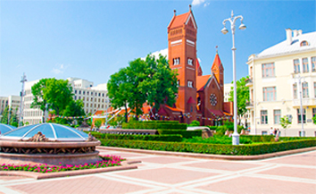
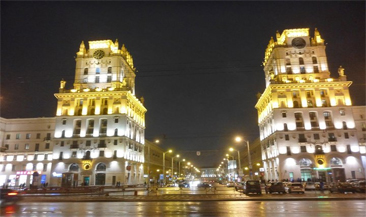
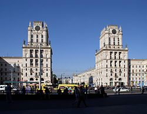

Минск
Минск (белор. Мінск) — столица Белоруссии, административный центр Минской области и Минского района, в состав которых не входит, поскольку является самостоятельной административно-территориальной единицей с особым (столичным) статусом, Город-герой. Крупнейший транспортный узел, политический, экономический, культурный и научный центр страны. Является ядром Минской агломерации. В Минске находится штаб-квартира СНГ. Десятый по численности населения (без учёта пригородов) город в Европе, четвертый на территории бывшего СССР и третий в ЕАЭС. Город расположен недалеко от географического центра страны и стоит на реке Свислочи. Площадь составляет 348,84 км², население — 1 981 690 человек (на 1 июля 2018 года) без учёта пригородов.
  